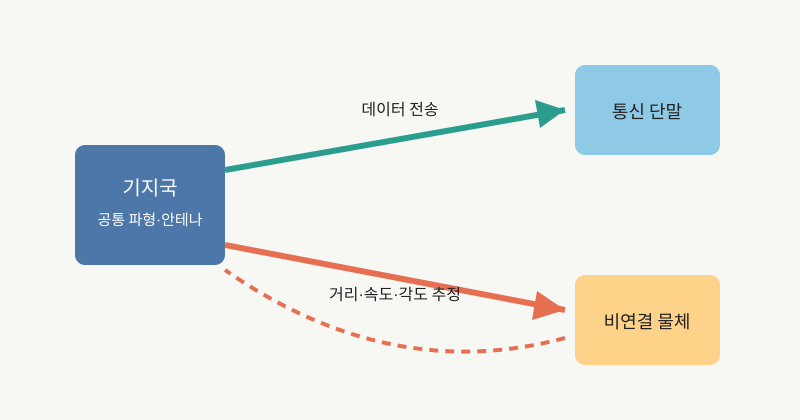

NOTE 09 · COMMUNICATION
6G 통신·센싱 통합(ISAC)
통신과 레이더는 생각보다 가까운 기술이다. 둘 다 전파를 만들고 안테나로 쏘며 돌아온 신호의 시간, 위상, 주파수를 처리한다. 차이는 통신이 상대에게 데이터를 전달하는 데 집중하고, 레이더는 반사를 읽어 거리와 속도를 알아낸다는 데 있다.

ISAC(Integrated Sensing and Communication)는 같은 주파수, 파형, 안테나와 기지국을 두 목적에 함께 쓰려는 접근이다. 통신 신호의 반사를 분석하면 연결되지 않은 물체도 감지하고, 거리·속도·각도를 추정할 수 있다. 실내 사람 감지, 차량과 보행자 추적, 환경 모니터링이 자주 거론된다.
거리 측정은 송신 신호와 반사 신호의 시간 차를 이용하고, 속도는 도플러 주파수 변화를 이용한다. 여러 안테나에서 받은 위상 차이는 도래각 추정에 쓰인다. 넓은 대역폭은 거리 분해능을 높이고, 큰 안테나 배열은 각도 분해능과 빔 형성 이득을 높인다.
문제는 두 목적의 요구가 항상 같지 않다는 점이다. 좋은 통신 파형이 좋은 거리 분해능을 보장하지 않고, 센싱을 위해 파형을 바꾸면 데이터 전송 효율이 떨어질 수 있다. 주변을 감지하는 통신망은 프라이버시와 권한 관리도 새로 고민해야 한다.
기지국은 자기 송신 신호가 수신기에 직접 새어 들어오는 자기 간섭도 처리해야 한다. 다중 기지국이 센싱 결과를 합칠 때는 시간과 주파수 동기, 좌표계 정합, 데이터 전송량이 문제가 된다. 감지 대상이 통신 가입자가 아닐 수 있어 동의와 데이터 보관 범위도 명확히 해야 한다.
ITU는 ISAC를 IMT-2030의 여섯 사용 시나리오 중 하나로 정의했고, 요구 기능으로 거리·속도·각도 추정, 물체 탐지, 위치추정, 이미징과 매핑을 제시했다. 3GPP는 Release 19에서 서비스 요구사항 연구를 진행했고 이후 무선·코어망 구조와 보안 항목을 확장하고 있다.